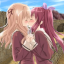

| Donate |
| Donate |

|
This character is unable to be killed under any circumstances. |
|---|
This messagebox is used for Nosferatu, every other character can be killed.
|  | The subject of this article is lacking a good image. You can help by creating one. |
|---|
Use this messagebox on pages which don't have a good image for their infobox.

|
This article is a work-in-progress. It may appear unfinished, or be missing information. |
|---|
Use this messagebox for articles which you are actively working on.
|
This article has not been updated since chapter x, and important information is either outdated or missing. You can help by updating the article. Relevant chapter(s): - Chapter y - Chapter z |
Use this messagebox for articles which are not up-to-date with story developments.
|
Sections of this article could use improvement. Relevant section(s): - I think the section about the cucking scene should have better phrasing. - More detail in the explanation of Chase Oliver's "funny money" policy. |
Use this messagebox to indicate specific sections of an article that could use improvement.